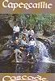

Celtic Lyrics Corner > Artists & Groups > Capercaillie > Cascade > An Eala Bhan
|  | An Eala Bhan |
| Credits : | D.MacDonald; arranged by Capercaillie |
| Appears On : | Cascade ; Secret People |
| Language : | Gàidhlig (Scottish Gaelic) |
| Other Versions : | " An Eala Bhàn " on Mairi MacInnes' album Causeway |
| Lyrics : | English Translation : |
| Gur duilich leam mar tha mi | Sad I consider my condition |
| 'S mo chridhe 'n sas aig bron | With my heart engaged with sorrow |
| Bhon an uair a dh'fhag mi | From the very time that I left |
| Beanntan ard a'cheo | The high bens of the mist |
| Gleanntannan a'mhanrain | The little glens of dalliance |
| Nan loch, nam bagh 's nan srom | Of the lochans, the bays and the forelands |
| 'S an eala bhan tha tamh ann | And the white swan dwelling there |
| Gach la air 'm bheil mi 'n toir | Whom I daily pursue |
| A Mhagaidh na bi tursach | Maggie, don't be sad |
| A ruin, ged gheibhinn bas | Love, if I should die |
| Co am fear am measg an t-sluaigh | Who among men |
| A mhaireas buan gu brath? | Endures eternally? |
| Chan eil sinn uile ach air chuairt | We are all only on a journey |
| Mar dhithein buaile fas | Like flowers in the deserted cattle fold |
| Bheir siantannan na blianna sios | That the year's wind and rain will bring down |
| 'S nach tog a'ghrian an aird | And that the sun cannot raise |
| Tha 'n talamh leir mun cuairt dhiom | All the ground around me |
| 'N mheallan suas 's na neoil | Is like hail in the heavens |
| Aig na 'shells' a'bualadh | With the shells exploding |
| Cha leir dhomh bhuam le ceo | I am blinded by smoke |
| Gun chlaisneachd aig mo chluasan | My ears are deafened |
| Le fuaim a'ghunna mhoir | By the roar of the cannon |
| Ach ged tha 'n uair seo cruaidh orm | But despite the savagery of the moment |
| Tha mo smuaintean air NicLeoid | My thoughts are on the girl called MacLeod |
| Air m'uilinn anns na truinnsichean | Crouched in the trenches |
| Tha m'inntinn ort, a ghraidh | My mind is fixed on you, love |
| Nam chadal bidh mi a'bruadar ort | In sleep I dream of you |
| Cha dualach dhomh bhith slan | I am not fated to survive |
| Tha m'aigne air a lionadh | My spirit is filled |
| Le cianalas cho lan | With a surfeit of longing |
| 'S a' ghruag a dh'fhas cho ruadh orm | And my hair once so auburn |
| A nis air thuar bhith ban | Is now almost white |
| Oidhche mhath leat fhein, a ruin | Good night to you, love |
| Nad leabaidh chubhraidh bhlath | In your warm, sweet-smelling bed |
| Cadal samhach air a chul | May you have peaceful sleep and afterwards |
| Do chusgadh sunndach slan | May you waken healthy and in good spirits |
| Tha mise 'n seo 's an truinnsidh fhuar | I am here in the cold trench |
| 'S nam chluasan fuaim a' bhais | With the clamor of death in my ears |
| Gun duil ri faighinn as le buaidh | With no hope of returning victorious |
| Tha 'n cuan cho buan ri shnamh | The ocean is too wide to swim |